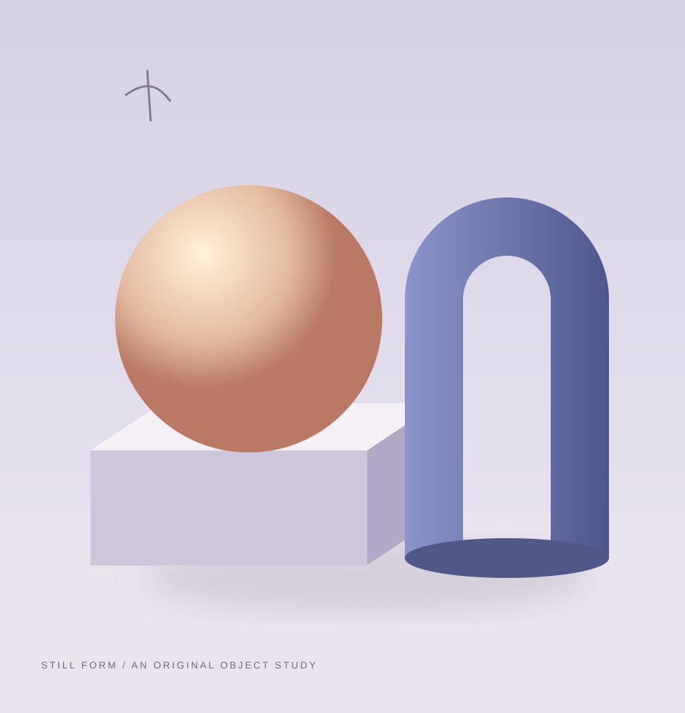
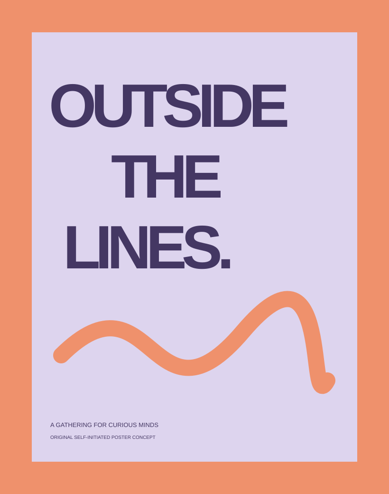
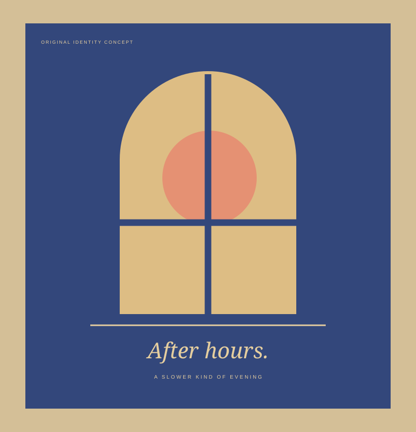
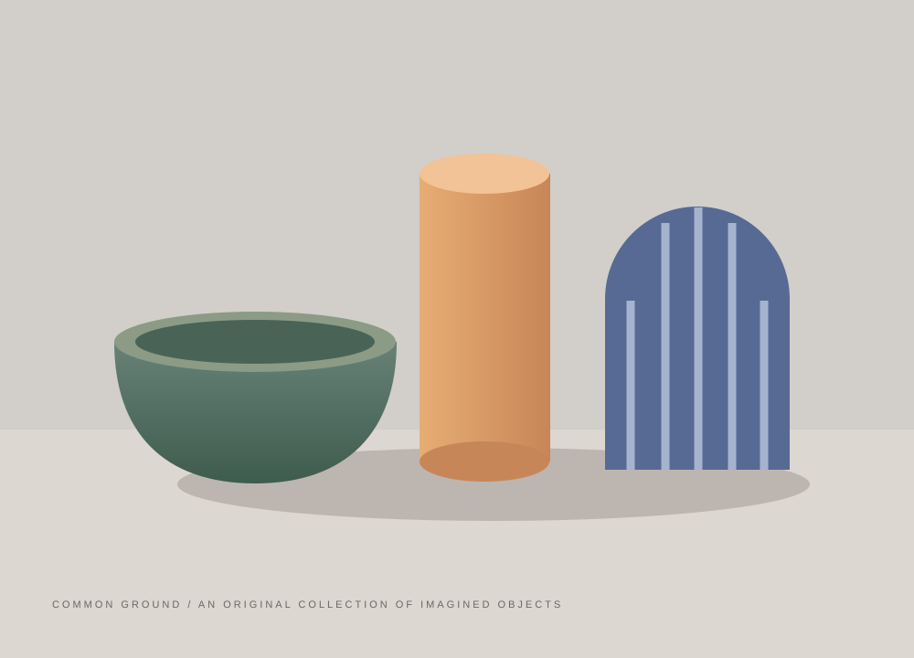

Still form — illustration unavailable. Select to view the project details.Take a closer look
A place for curious shapes,
considered colour, and new ideas.
Small worlds.
Big ideas.
Selected work
Made to look
a little closer.
Original self-initiated concepts.
No client commissions are
represented here.


Outside the lines — illustration unavailable. Select to view the project details.Take a closer lookOutside the lines
Identity · A creative gathering

After hours — illustration unavailable. Select to view the project details.Take a closer lookAfter hours
Identity · A slower kind of evening

Common ground — illustration unavailable. Select to view the project details.Take a closer lookCommon ground
Objects · Different shapes, one familyHow I approach the work
A clear idea.
A little unexpected.
I start with what a project wants to say. Then I look for the shapes, words, and details that make it feel specific.
Identity with character
A visual language that belongs to the idea, from the big picture to the small applications.
Images that say something
Illustration and visual compositions made around the content, with room for a little surprise.
This fictional portfolio explores a visual approach. All artwork was made for this starter.
Let’s make something interesting
Say helloExample contact. Set the owner’s destination before publishing.